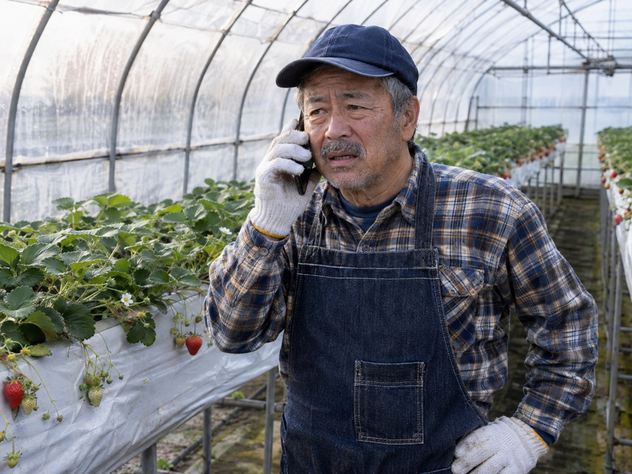

「朝いちばんに一覧を開くと，
なかなか出てこない．来週は寒波なんだ」
GitHub のアカウント
ブラウザpush送るpull受け取るチームの共有の棚．3人の PC と行き来する．アカウントがある人は 1-3 だけ
github.com/signup → メール → パスワード → ユーザー名 → 届いた数字
2段階認証（求められたら）→ スマホの認証アプリで QR
回復コード（recovery codes）は必ず保存
ユーザー名をメンターに
招待が届いたら 3-1 へ
GitHub にログインできる
Ubuntu と GitHub の接続
UbuntuUbuntu の画面と，ブラウザを行き来する
sudo apt install -y ghgh auth login --hostname github.com --git-protocol https --web表示と操作
Ubuntu
Authenticate Git…?→ Y → Enterone-time code: ABCD-1234→ 8文字を控えて Enterブラウザ 開かない → github.com/login/device
8文字 → Continue → AuthorizeUbuntu
✓ Logged in as あなたの名前curl -fsSL https://kokiwakatsuki.github.io/mentor-study/ubuntu/git-setup.sh | bash「○ 設定完了」→ OK
うまくいかないとき
Unable to locate package gh → sudo apt update → 2-1
× GitHub に未ログイン → 2-2 をもう一度
Logged in as・「○ 設定完了」
チームのリポジトリに参加
VS Code└ 箱：サーバー
app.py・sensor.py・data/・.git
チームのリポジトリ
手元の berry-watch の行き先（origin）を，チームの GitHub に変える
招待のページ → Accept invitation
Ubuntu で
cd ~/berry-watch && code .→ VS Code のターミナルgit remote set-url origin https://github.com/{team}.gitgit pull左の一覧に
sample_data.py（先輩の追加）
うまくいかないとき
Repository not found → 3-1 の承諾を確認
Not possible to fast-forward → 自分の変更が残っている．メンターと確認
sample_data.py が届いた
相談の聞き取り
メンターが園主の役．5つを聞く
「遅い」→ 何秒？ 園主の言葉は「 」，自分の推測は（推測）
質問の例
どの画面で？ ほかの画面は？
急に？ だんだん？
最近，何か変えたことは？
5つをメモ
Issue に記録
GitHub代表1人 新しい Issue → 下の型を貼って埋める → Create
## 相談の内容（園主の言葉） ## 聞き取り - 何が： - いつから： - どのくらい： - 何に困る： - いつまでに： - そのほか： ## 受入基準（直ったと言える条件） - [ ]全員 受入基準を園主と決める
例：一覧の表示時間 1秒未満／表示内容は今と同じ
ほかの2人 足りない情報をコメント
Issue に受入基準まで
手応えメモ
このブラウザに保存．第11回で並べる
3つとも記入
 第6回 完了
第6回 完了
相談を記録に残せた
- チームのリポジトリに参加
- 聞き取りと Issue
- 受入基準
終了
VS Code・ブラウザ・Ubuntu を閉じる